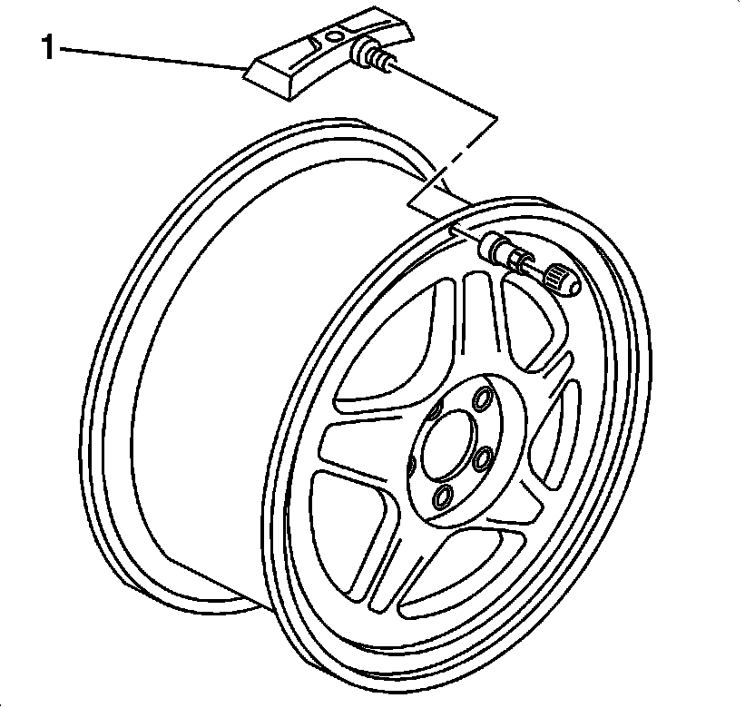

Tire Pressure Sensor: Locations
Wheels/Vehicle Underbody Component Views
Tire Pressure Monitoring Components
Tire Pressure Monitoring System Component Views:

1 - Tire Pressure Monitoring Sensor - Left Front (Left Rear , Right Front , and Right Rear Similar)